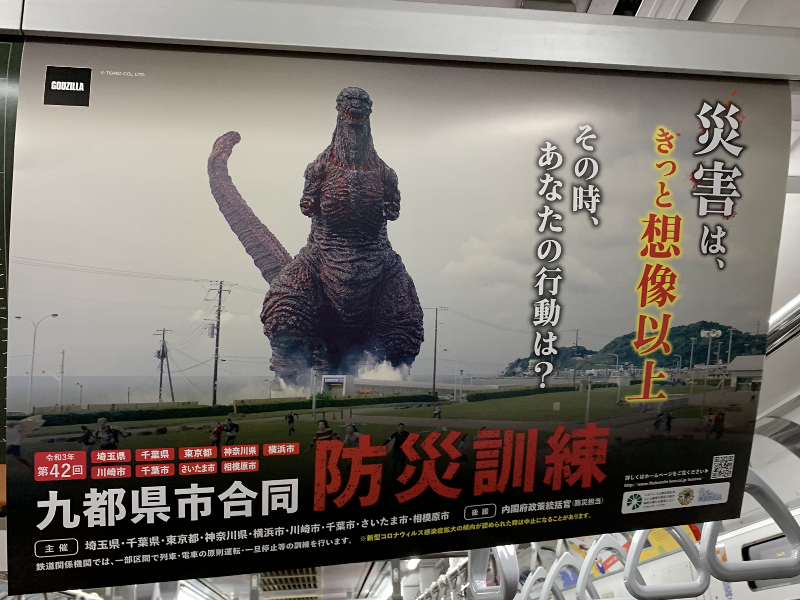
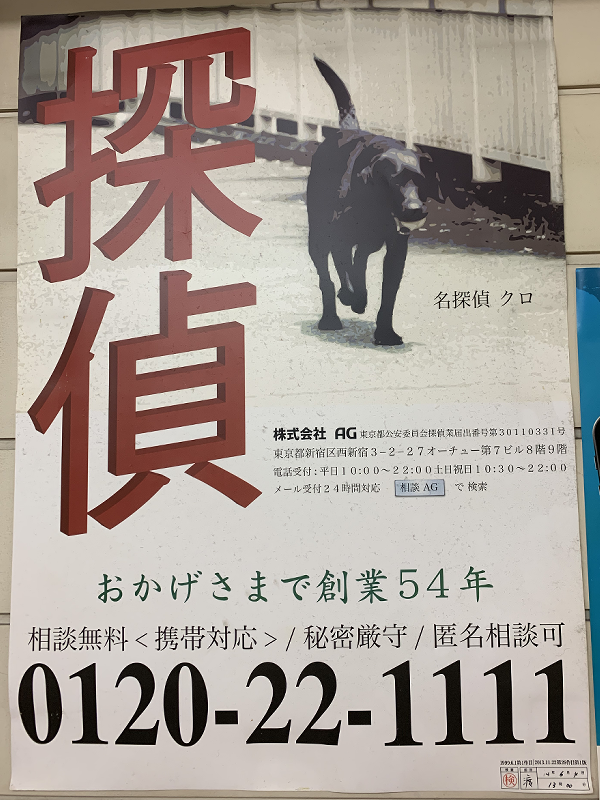
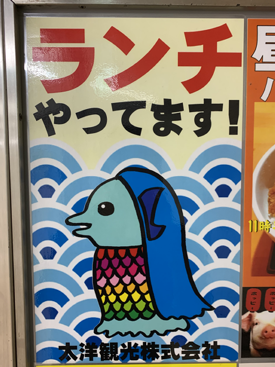

第２回課題【看板・サイン】
防災訓練

１０月１１日、相鉄線電車内で目撃。災害が文字通り想像以上でとても印象的だった。
なにを想定した避難訓練をするのかに興味が絶えない。
探偵

１０月７日、横浜駅近辺で目撃。歴史ある探偵事務所の「名探偵クロ」が印象的。
黒い犬の起用はモノクロ印刷の名残だと推察できるが、カラー印刷が主流の今となっては背景色を変えにくいやっかいなキャラクター。
ランチやってます

１０月７日、横浜駅近辺で目撃。ランチ要素が文字しかないのに絶妙に印象に残る張り紙。
このアマビエもランチになるのだろうか、、、。